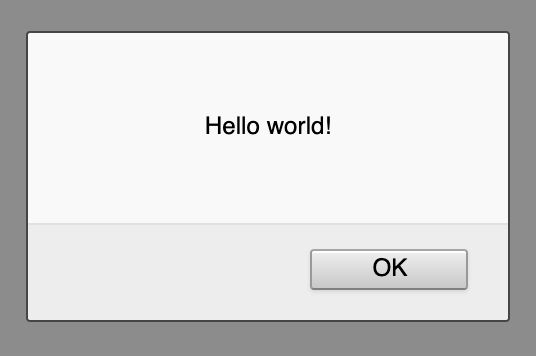

Getting started with javascript
In order to implement the logic of our game we need to use javascript which is a language that
can run in your web browser.
We need to create a file in the same folder as game.html and call this file game.js (js is
short for javascript).
Once you've created the file add this to game.js:
alert("Hello world!");
Right now if you reload your webpage nothing will happen, this because we still need to link
our game.js file into our game.html file. To do this we add the script to the bottom of
the body (just above </body>.
This is the line you need to add, src is short for source and it tells the browser to look for
a javascript file named game.js:
<script src="game.js"></script>
The last 3 lines of your game.html should look like:
<script src="game.js"></script>
</body>
</html>
Now if you reload your website you should see an alert popup saying "Hello world!", it might look
something like the one below but it depends on which web browser you use.

Baking cookies
Now that we've got our javascript code setup we can start actually doing something with it.
The first step is to delete that original alert("Hello world!"); so that your javascript
file is empty again.
Now we need to think how we are going to implement the cookie code. We need a way of storing how
many cookies have been baked so far. To do this we're going to use a variable. Let's create one
now, add this to your javascript file:
// We start with 0 cookies;
var cookieCount = 0;
All this code does is create a variable called cookieCount and initialises the value to 0 (at the
start we have baked 0 cookies).
Next we need a function that simulates baking some cookies, add this below where you've created your
cookieCount variable:
// When you call this function this will simulate
// baking the number of cookies you pass into the
// function as a parameter.
function bakeCookies(numberOfCookies) {
cookieCount = cookieCount + numberOfCookies;
}
Great! We've now got some code that will simulate baking cookies but it's never run!
We want to run that function every time you click the cookie image.
To do this we can add another attribute to our image function called onclick which allows
us to run javascript code whenever a user clicks the element.
Our new image tag will look something like this (don't delete your old img tag, just update it
to have the new onclick="bakeCookies(1);" attribute):
<img src="URL" onclick="bakeCookies(1)">
Right now if you try to click on your cookie image to bake nothing will happen.
This is because we change the variable which stores the cookie count but we never display it.
Let's look at a snippet of our HTML code from earlier:
<p>
You have <span id="cookieCount">0</span> cookies
</p>
If we can figure out a way of change what's inside the span tag (the one with the id cookieCount)
everytime a cookie is baked then we can keep the number up to date.
To do this we use a javascript function called document.querySelector(selector) which allows
us to search for HTML tags from within javascript.
Once we have to element we can change things about it, for example we can do
element.innerHTML = "new message"
which will change the text inside the element to be the text on the right.
If you've done CSS where you've used selectors such as . for a class or # for an id,
this works just the same way.
Our span tag has the id cookieCount which means the selector we want to use is #cookieCount.
Here's the code inside our newly modified bakeCookies function:
function bakeCookies(numberOfCookies) {
cookieCount = cookieCount + numberOfCookies;
var cookieCountSpan = document.querySelector("#cookieCount");
cookieCountSpan.innerHTML = cookieCount;
}
Great, now trying saving your code and then reloading your webpage.
Now everytime you click on the cookie the number of cookies displayed in
You have X cookies should go up by one each time.